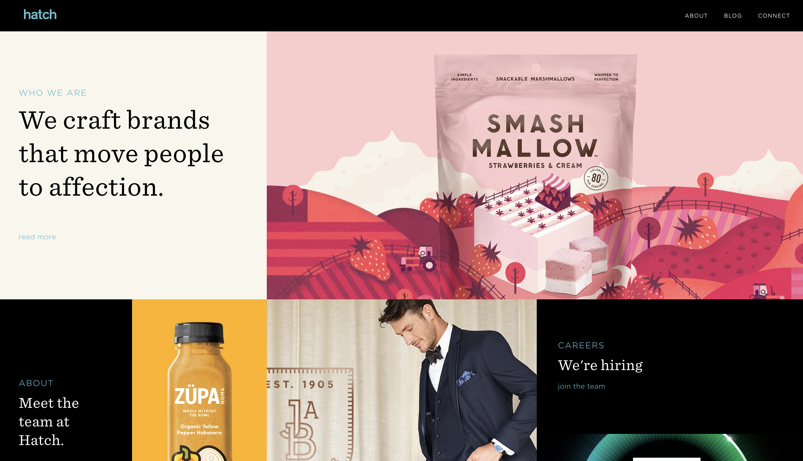
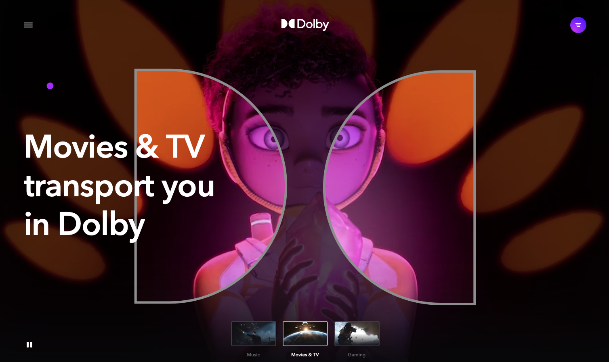
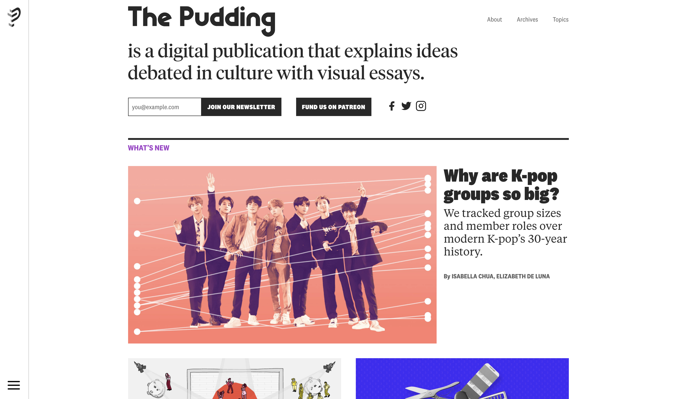
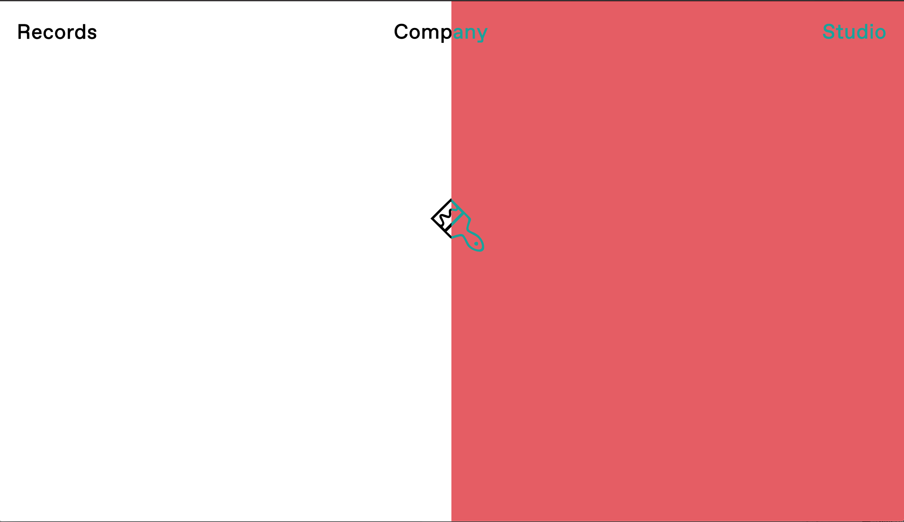

Design Styles
The purpose of this assignemnt is to showcase websites that use the four design styles dicussed this week.
Below you will find 4 websites I found that give the best examples of the design principals listed in the bullet
points below. As you can see, the designers were able to use variations of contrast, repetition, alignment, and
proximity; some using more of a principal than others.
I chose each website based on what I percieved as
showing one of the design styles. Please click on on the picture to direct you to the respective website page.
- Contrast
- - A form of visual communication used to contrast similar elements in one
group look similar but different from another group of elements. This is done by using colors, fonts, shapes etc.
- Repetition
- - Patterned movement use to create interest and leadinng the eye from one element to the next.
- Alignment
- - Used to create hierarchy of importance for the content of the page
- Proximity
- - Used to visually group similar items to create a more organized layout. Unrelated items should be
placed further apart emphasizing a weak relationship.
- Contrast

This SF based branding and design company’s website is a good example of
using contrast on their website as well as alignment and repetition. The designers
used contrast in terms of color and shape in the following ways to navigate the website.
- Each element is distinguished by a picture and contrasting colors.
- The importance of an element is distinguished by the shape or size of the element.
- Each of these elements represent a section of the website such as about the
company, culture, career opportunities, projects etc.
- Thus the contrasts [aired with the elements allows the user to easily
navigate and explore and learn more about the company.
- Repetition

Another Bay Area based company; Dolby, known for its audio technology has
a website designed with repetition in mind.
- Repetition is used consistently throughout the website in the form of
spatial relationship, font, size and smooth texture look to create balance and unity.
- The designers applied space, pattern and smooth texture to create a a flowy rhythm to it.
- Dolbys website also uses a pattern of videos at the top of the page followed
by rectangle and square boxes with pictures of their work along with
companies they have worked with in the past.
- Alignment

One of my all-time favorite websites for data journalism and pop culture.
The puddings home page is a great example of the alignment principal used.
- Web designers created a hierarchy of grids organizing the website from
most important projects down to past projects
- The top grid or box being the biggest with bigger font and at the center
of the page indicates an importance.
- Next two recent projects slightly smaller are aligned next to each other
underneath the main work.
- Followed by 6 smaller boxes aligned unformly to show past projects based
on topic.
- The use of this design principal created a pyramid like hierarchy of
information going from recent to previous projects.
- Proximity

A website created for one of my favorite musicians and artists Toro y Moi.
His label and graphic design studio, Company Studio, is a perfect example of
proximity use.
- The use of proximity and simplicity of his webiste makes it clear where
you are and what your are looking at
- The website uses contrasting colors which change everytime you refresh
to organize and distinguish between music studio and graphic design
related work.
- The website clearly uses proximity to divide the website into two
sections and keeping things related to both sides of the site.